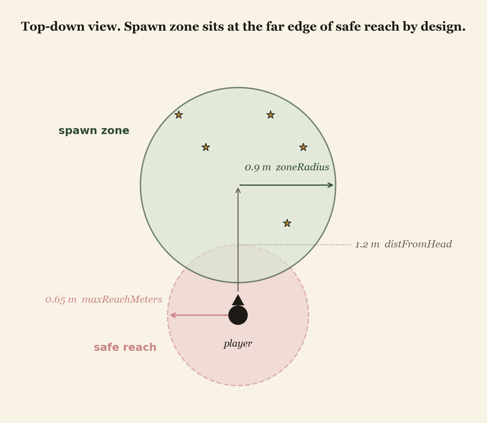

A standalone Meta Quest 2 Unity build for LGMD, FSHD, and myotonic dystrophy patients. Butterflies caught with bare hands in a Gaussian-splat garden, an overextension guardrail that redirects rather than punishes, and every parameter tunable from the Unity Inspector.
A standalone Unity APK that runs natively on a Meta Quest 2 with no controllers and no PC tether, built for the roughly 250,000 Americans living with progressive muscle disease. The patient stands inside a World Labs Marble-generated Japanese garden and reaches out with their bare hands to catch floating butterflies. The build exists because exercise is one of the few interventions that meaningfully slows functional decline in this population, and no commercial VR rehab platform targets it. The therapeutic outcome the design protects is straightforward: keep the patient moving, never let them overextend.
The implementation is five C# scripts on top of Unity 2022.3 LTS and the Meta XR SDK, built end-to-end in an 8-hour hackathon. The time budget is the reason the build is intentionally minimal: every script does one job, every catchable lives off a single tag, and the entire safety branch is one independent Update() loop. Hand tracking comes from OVRSkeleton at 26 joints per hand. A kinematic Rigidbody plus a 10 cm trigger SphereCollider, tagged "PlayerHand", is the single contract between the wrists and the butterfly catch loop. A second, independent script measures wrist-to-head distance every frame and raises a soft redirection cue the moment the patient over-reaches. Both branches converge on a single GameManager singleton that owns the score, the session timer, and the UI.
The novelty is the patient population, not the engine. Every commercial VR rehab product on the market (XRHealth, REAL System, MindMaze, Karuna Labs) is built for stroke, traumatic brain injury, or chronic pain. None of them target muscular dystrophy, and the population that needs them most has no structured, motivating, safe system designed for them. AdaptVR is that build. The design tilts hard toward "the patient cannot lose": generous catch radius, no fail screen, redirection rather than punishment on overextension, every clinical tunable exposed on the Inspector.
Progressive muscle diseases like Limb-Girdle Muscular Dystrophy (LGMD), Facioscapulohumeral Muscular Dystrophy (FSHD), and myotonic dystrophy affect more than 250,000 Americans. Exercise is one of the only clinically validated interventions that slows functional decline in this population, but it sits inside a hard paradox.
The Meta Quest 2 is the first piece of hardware that makes a deployable answer to this gap structurally possible. It is standalone (no PC, no setup), it is cheap enough at retail to reach patients, and its native hand-tracking pipeline replaces controllers with bare hands. Controllers are a non-trivial barrier in this population: the grip strength and finger isolation that trigger pulls require is exactly what the disease takes away. Hand tracking removes the barrier.
OVRSkeleton pipeline reads wrist position directly, so the build never asks the patient to grip, squeeze, or press anything.The hand-tracking SDK and the VR engine are off-the-shelf. The contribution is the patient population the build is designed for, and the safety posture that population requires.
OverextensionDetector) measures wrist-to-head Euclidean distance every Update() and raises a soft cue the moment the patient exceeds a tunable threshold. There is no fail state, no penalty, no points lost. The system redirects the body, not the will.Every section below is the engineering that makes those four commitments hold inside the Quest 2.
OVRManager.HandTrackingSupport = HandsOnly. Children LeftHandAnchor / RightHandAnchor carry OVRHand and OVRSkeleton. No controllers are wired in.Skybox/Panoramic material in Lighting and Environment.zoneCenter / zoneRadius sphere, picking a new target every time it gets within 5 cm of the current one._target.y >= zoneCenter.y - zoneRadius * 0.5) so butterflies never sink below a comfortable reach line.OnTriggerEnter checks for tag "PlayerHand". On a catch: particle effect and sound fire if assigned, GameManager.Instance.RegisterCatch() is called, the renderer and collider hide for 1.2 seconds, then the butterfly respawns at a fresh point inside the same zone.One empty GameObject. At Start() it computes a spawn center as cameraTransform.position + flattened-forward * distFromHead (default 1.2 m), then instantiates count butterfly prefabs (default 5) at random points inside a sphere of zoneRadius = 0.9 m around that center. The spawner writes zoneCenter and zoneRadius into each spawned controller, then steps back. Ongoing motion is the controller's problem.
One per hand. Every Update() walks handSkeleton.Bones, finds the Hand_WristRoot bone, and snaps the GameObject's transform to it. A kinematic Rigidbody (required for OnTriggerEnter to fire under Unity's physics rules) and a 10 cm trigger SphereCollider, tagged "PlayerHand", are the contract that the butterfly's OnTriggerEnter matches against. That tag is the only handshake between the two scripts.

Independent of the catch loop. Every frame, Euclidean distance from centerEyeAnchor.position to each wrist bone. If either exceeds maxReachMeters (default 0.65 m), GameManager.ShowWarning() surfaces a soft cue for 2.5 seconds. There is no fail state. The patient gets redirection, not punishment, and the score is untouched.
GameManager.Instance) so the butterflies and the overextension detector both find it without scene wiring._catches, _elapsed, _sessionActive, _warningTimer. Default session is 300 seconds.OverextensionDetector.EitherOverextended every frame and triggers ShowWarning() with a 2.5 second display window per cue.Every tunable that matters lives on the Inspector, not in code. A clinician sets these once per patient and reuses the configuration across sessions, scaling difficulty to MRC grade and disease profile without recompiling.
ButterflySpawner.count: number of butterflies at session start.distFromHead: spawn distance from the patient's head. Closer for weaker patients, further for stronger.zoneRadius: how spread out the butterflies are inside the spawn zone.maxReachMeters: the overextension guardrail threshold.sessionDuration: total session length in seconds.Validated qualitatively on Quest 2 hardware. The build runs standalone as an Android APK, hand tracking holds under typical session motion, the overextension cue surfaces redirection at the configured threshold, and butterflies respawn cleanly inside the spawn zone after each catch. The 15 cm trigger radius on the butterfly collider is deliberately generous because patients with MRC 3 to 4 strength have imprecise distal control, and a tighter radius would create frustration that correlates directly with disease severity, which is the dropout dynamic the build exists to prevent.
distFromHead from 0.9 m to 1.5 m and zoneRadius from 0.6 m to 1.1 m on the Inspector produced the expected difficulty changes without code edits.The supporting literature for the design tilt comes from outside this build: exergaming has been reported to achieve roughly 3 to 5 times better adherence in neuromuscular populations than standard home-exercise programmes. The number motivates the design. It is not a measurement of AdaptVR. A longitudinal adherence study against a standard home programme is the obvious next step.
The clinical case is short. The population needs to exercise. The population is being failed by every commercial VR rehab platform on the market. The Quest 2 hardware is finally cheap enough and capable enough to close that gap with hand-tracked play that respects what the disease takes away. If even a fraction of the standard 70% home-programme dropout rate gets recovered by a build that the patient actually wants to put on, the downstream effect is preserved muscle function for longer, slower loss of independence, and fewer of the cascade complications that follow when neuromuscular patients stop moving. The design choices that matter most in this build (no fail screen, redirection over punishment, every parameter therapist-tunable, no controllers) are the parts that make it deployable for the patient population it targets, rather than something that demos well and rehabilitates nobody.
distFromHead and zoneRadius per session. LGMD-specific posture-locked seating and FSHD-specific overhead-reach exclusion are still configured by the therapist at session setup, not by an automatic per-condition profile.The limitations map directly onto the next stage of the build.
The garden environment is a Gaussian-splat export from World Labs Marble. Hand tracking is the Meta XR SDK. The clinical framing draws on published guidance from TREAT-NMD on exercise in progressive muscle disease.